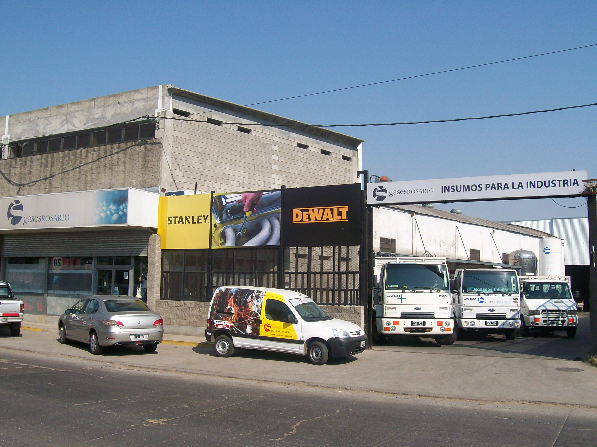
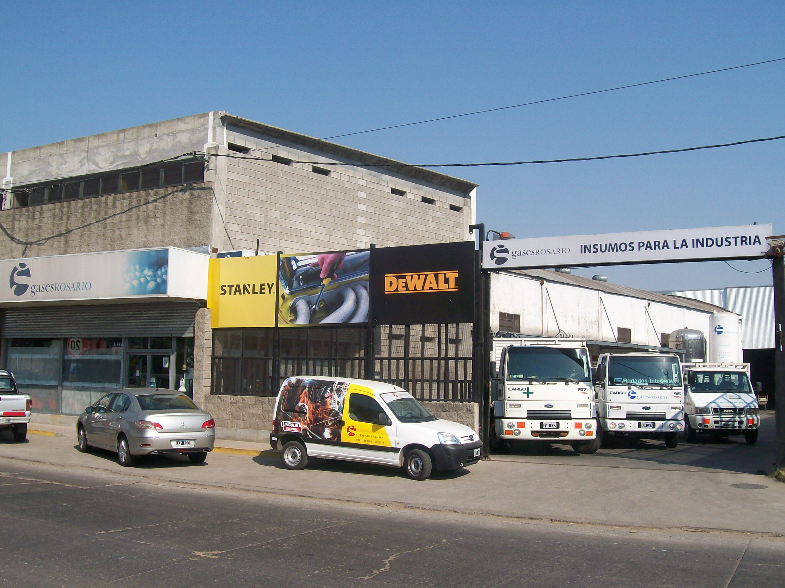

Gases industriales
Varios gases tales como el acetileno, propileno y el hidrogeno pueden ser usados, en combinación con el oxígeno, en diferentes aplicaciones industriales. Las más comunes son corte y calentamiento, aunque existen muchas más aplicaciones que sólo corte y calentamiento. Entre ellas están el brazing (un tipo de soldadura), uniones, recubrimiento con carbono, limpieza, endurecimiento de superficies, precalentamiento, texturado y aspersión de pulverizado. Pueden incluso ser usados para corte bajo el agua.